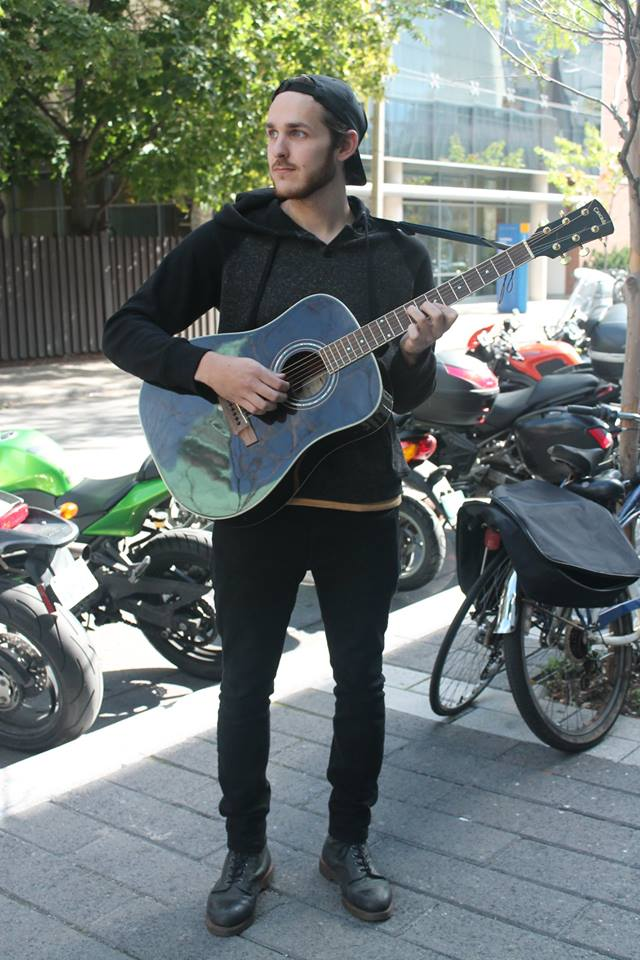

Article by Hannah Polinski
Photos by Alina Bykova
Uploaded on September 17, 2015Seated on a bench in the sunny Ryerson quad, Nate Hilts recalls his first days with a guitar in hand, reminiscing about songs like Ode to Joy and Rockin’ Robin. His calm demeanor matches the quaint fall weather as he quietly ponders what music means to him.
|
For Hilts, a first year photography student, music presents a unique sort of escapism. He admires the way that music can encompass a mood or convey the emotions of the artist. One of his main goals when he creates music is to get a clear feeling across to his audience.
“I would say music is a very powerful tool for coping,” Hilts says without hesitation. “There have been times when I’ve needed to pass difficulties in my life and music was the only thing that was there. I wouldn't have to think about what was going on. I could just throw it on and get immersed in that kind of mood that the artist wanted you to feel.” While Hilts’ primary focus is on rock and blues, he also dabbles in electronic music. He recalls watching videos of electronic artist Ronald Jenkees and feeling inspired by his overall passion for what he was doing. While Hilts’ primary focus is on rock and blues, he also dabbles in electronic music. He recalls watching videos of electronic artist Ronald Jenkees and feeling inspired by his overall passion for what he was doing. “Whenever he did music, he looked like he was getting really into it,” Hilts explains. “That feeling was exactly what I was going for when I was getting into music. Even if it’s a small clip of a song, or even if I don’t think it sounds too great, I just do it. It’s the process that’s interesting to me.” |
 |
Spotlight Editor in Chief
Alina Bykova
alina.bykova@ryerson.ca
Want to get your time under the lights? Are you a writer looking to join the Artist Spotlight initiative? E-mail us at music@ryerson.ca to see how!